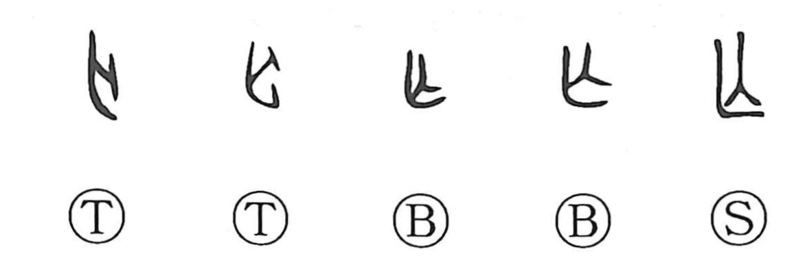

亡

Kun: nakunaru, nakusu, horobu, naki | On: bou, mou
to perish ・ to die ・ to flee ・ ruin ・ not; without
Explanation
亡 pictures a dead person with the limbs drawn inward. The contracted body gives dying, disappearance, and loss. A related form that still shows hair on the head is an early graph behind 荒.
From death and absence, 亡 extends to perishing, destruction, or something no longer being present. It can also describe flight into exile. A departing exile could receive funeral rites, placing that departure within the same ritual sphere as death.
The negative use, ‘not’ or ‘without,’ is a sound borrowing, like several other old negative words. 无 is a variant writing of 亡. The bodily form and the borrowed negation meet in the familiar range of absence, loss, and extinction.